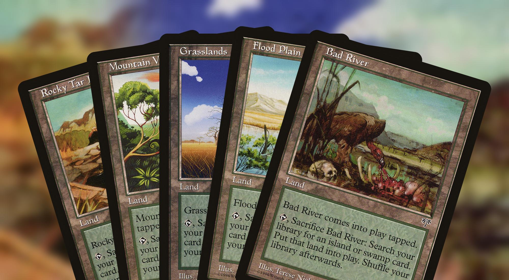

Fetch Lands
Quick guide on how to improve your EDH manabase
With the exception of monocolor commanders, properly building your manabase can be a real challenge.
Having access to the right color at the right time is key to being able to cast spells.
Fetch Lands are a specific type of lands that can be sacrificed to search their controller's library for another land.
In addition to giving you access to the right colors, Fetch Lands also help you remove lands from your library and thus reducing the likelihood of drawing a land late game, when mana is no longer an issue.
Their ability to shuffle on command also adds flexibility.
Mirage fetch lands

Fetch lands were first introduced in Mirage as an allied color cycle. Each of these enters the battlefield tapped and can be sacrificed to search for a land with at least one of two basic land types of an allied color pair.
Shards of Alara panoramas
The panorama were released in Shards of Alara as a Shard cycle. They all tap for 1 colorless mana. The panoramas allow you to fetch for 3 basic land types at the expense of paying 1 colorless mana and having the land entering the battlefield tapped.
New Capenna fetch lands
Streets of New Capenna fetch lands sacrifice themselves when they enter the battlefield to find a basic land in one of the three colors of their respective families. In addition to fetching, they also gain you 1 life.
Miscellaneous fetch lands
In addition the previously mentioned fetch lands, there are a lot of variants not part of specific cycles.
Terramorphic Expanse, Evolving Wilds and Fabled Passage all allow you to fetch for a basic land right away but only the later will conditionaly have it enter the battlefield untapped.
Blighted Woodland, Krosan Verge and Myriad Landscape allow you to fetch for two lands at the expense of either of mana or tempo.
Terminal Moraine and Warped Landscape will both fetch one basic land for one mana, entering the battlefield tapped. Thawing Glaciers gives away some tempo but allows for a small synergy if you manage to untap it.

Flagstones of Trokair and Maze's End are mostly reserved for very niche setup. Maze's End could make its way in more budget manabases with the additional gates printed in Commander Legends: Battle for Baldur's Gate.
Prismatic Vista is probably the closest one in terms of power as it can fetch for a basic land entering the battlefield untapped for the price of 1 life.
The "real" fetch lands
The "real" fetch lands were first introduced in Onslaught in Allied colors only.
The cycle was completed in Zendikar with the addition of the Enemy colors.
They enter the battlefield untapped and for 1 life, will fetch for a land with a basic land type, also entering the battlefield untapped.
Why should I consider them?
If your budget allows it, Fetch lands are the perfect lands for your multicolor Commander decks.
In a nutshell:
- They help you fix your mana by fetching the right land at the right time.
- They get you an additional Landfall trigger (Lotus Cobra, Avenger of Zendikar, Felidar Retreat)
- They synergize particularly well with recursion spells and abilities (Life from the Loam, Brought Back, Sun Titan).
- They help you get rid of unwanted cards at the top of your library (Scroll Rack, Brainstorm, Sylvan Library).
- They help you fill your graveyard if you are trying to reach Threshold or Delirium.
- And finally, you can double the effect of their activations (Rings of Brighthearth, Lithoform Engine).

References
- Allied Color
- Avenger of Zendikar
- Basic Land
- Blighted Woodland
- Brainstorm
- Brought Back
- Commander Legends: Battle for Baldur's Gate
- Delirium
- Dual Land
- Enemy Color
- Evolving Wilds
- Fabled Passage
- Felidar Retreat
- Fetch Lands
- Flagstones of Trokair
- Graveyard
- Krosan Verge
- Landfall
- Life from the Loam
- Lithoform Engine
- Lotus Cobra
- Mana Fixing
- Manabase
- Maze's End
- Mirage
- Monocolor
- Multicolor
- Myriad Landscape
- Onslaught
- Prismatic Vista
- Rings of Brighthearth
- Scroll Rack
- Shards of Alara
- Shock Land
- Shuffle
- Streets of New Capenna
- Sun Titan
- Sylvan Library
- Terminal Moraine
- Terramorphic Expanse
- Thawing Glaciers
- Threshold
- Warped Landscape
- Zendikar